Open in new window for convenient side-by-side reading with Podium. | Print me
Podium is:
...that runs on:
...with input devices:
...and practice tools:
...url:
https://studiop5.org/podium
Podium is provided as-is, without warranty of any kind. See the license for complete terms. Users are responsible for ensuring they have the right to use any score files opened in Podium.
Welcome to Podium! This chapter introduces everything you'll need to start using Podium. For more information on any topic, follow the chapter references throughout.
Launch Podium at https://studiop5.org/podium. You'll see a circular menu on a gray background, and the Score cell is highlighted. Drag out from the Open cell to reveal the Open Panel. Select a storage location (Local, Google Drive, Dropbox, OneDrive, or Recent), then navigate to a PDF score and tap to open it.

See Chapter 4: Score Ring for complete file management details
Once your score is open, tap the inner ring's Layout cell. The outer ring will show 4 layout options:
Tap any layout cell to activate the layout. Drag out from the cell to open a configuration panel. Use a two-finger pinch-and-pan gesture on the score to resize and reposition.


See Chapter 5: Layout Ring for detailed layout controls and settings
Navigation: Tap, swipe, or fling score pages to turn them. Long-press anywhere on the background to summon the menu. To hide the menu, fling it to any corner or edge, or long-press its center grip to park it in the upper left corner.
Annotations: Tap the inner ring's Ink cell to add annotations. The outer ring shows tools for:
Activate any Ink tool by tapping, then tap or drag on a score page to use it. Configure the tool by dragging the corresponding panel from its cell.

See Chapter 6: Ink Ring for complete annotation tools and techniques
The menu has three parts:
Both rings can be rotated by dragging or flinging them in a circular motion.

See Chapter 3: Interface Basics for complete interface details
Cells with small diamond-shaped pointers (like compass points) conceal panels used to configure the cell. Drag out from these cells to reveal the panel. Using this touch-drag-release motion, you can open and position any panel with a single gesture. Once open, you can always reposition a panel by dragging on its textured header. Hide any panel by flinging it, in any direction, from the header. Alternatively, close it by tapping the 🗙 button.
We've just seen that panels can be moved by dragging on their textured header. In addition, everything in Podium—menu, panels, layouts—is resizable and movable using two-finger pinch-and-pan gestures (or Ctrl+mouse/Ctrl+wheel for desktop). See Chapter 3: Interface Basics for details.
Tap the inner ring's Score cell, then tap Save (or drag out from Save to choose a new location/name). Your annotations and settings are saved within the PDF file.

See Chapter 4: Score Ring for saving, printing, and score details
To add, remove, or rearrange pages, tap the inner ring's Page cell. The outer ring provides:
Note: Like Ink tools, Page tools auto-deactivate after a few seconds of inactivity.
The shared buffer lets you transfer pages between Podium tabs: use Export to send a page to the buffer, and Import to insert it into another score. The buffer is shared across all web app tabs and windows, and persists across sessions. Tabs of the web app (studiop5.org) share one buffer, and tabs of the browser extension share another; transferring across these boundaries is not possible.

See Chapter 7: Page Ring for complete page management features
Tap the inner ring's More cell to access a suite of musician's practice tools. Most of these panels can be detached from their headers and positioned anywhere on screen for convenient access while practicing:

See Chapter 9: More Ring for detailed information on each practice tool
Podium works with foot pedal page turners that simulate arrow key presses. Configure arrow key behavior in the Page Ring's Numbers panel to map pedal presses to page turns or bookmark navigation.
See Chapter 7: Page Ring - Numbers for keyboard shortcut configuration
Tap the inner ring's App cell, then tap the Guide cell to access this document.
That's it! You're ready to use Podium. Explore the chapters below for in-depth information on each feature.
↑ Back to Table of ContentsThe simplest way to use Podium is to launch it directly from the URL. No installation required. Just open studiop5.org/podium in your browser and start using it immediately. There is no registration, login, or onboarding of any kind.
However, installation may be desirable in certain situations, especially when using Podium in performance where internet connectivity cannot be assumed.
Offline use. After your first visit, Podium stores itself on your device automatically, so it can open and run without an internet connection, even without explicit installation. However, if you plan to use Podium offline, for example in performance, installing it is strongly recommended. Without explicit installation, the browser may quietly discard the stored copy when it needs space or when you clear your browsing history, leaving you without Podium when you need it most. Fortunately, Podium is remarkably compact: the storage it uses on your device is roughly equivalent to two photos from a typical smartphone camera.
Installing as a browser extension or PWA makes Podium a permanent resident on your device. The extension, being fully self-contained, is the most robust option for offline use on desktop. A PWA install is equally reliable on Android, desktop, and Chromebook. The one exception is iPhone and iPad: even as an installed PWA, the system may occasionally require an internet connection after a long period of inactivity; simply open Podium every now and then to keep it fresh.
Keep in mind that only scores you have stored locally will be available offline; scores in cloud storage require an internet connection to open.
Podium can be installed as a browser extension in supported desktop browsers (Chrome, Edge, and other Chromium-based browsers like Brave or Opera). After installation, the Podium icon will be available under the browser's extensions menu (the puzzle piece icon in the toolbar). We recommend pinning it straight away for easy access: tap the puzzle piece, find Podium in the list, and tap the pin icon next to it. Once pinned, tap the Podium icon in the toolbar and tap "Launch Podium" to open the app directly. Scores can then be loaded in the usual way. The extension also provides two fast ways to open scores while you are browsing the web:
Since the extension works both online and offline, it's ideal for performance situations where you can't rely on an internet connection. The extension maintains its own recent list of scores opened via "Open with Podium", allowing you to reopen them with a single tap.
The extension works well with online score libraries such as Musopen and IMSLP. For IMSLP, logging in to your account provides the best experience—scores open instantly in Podium with no intermediate pages. Please support this invaluable resource for musicians by becoming an IMSLP member. Musopen works without a subscription; a one-time permission grant is required on first use. Consider supporting Musopen's mission to provide free music resources. For classical guitar repertoire, Jean-François Delcamp's Classical Guitar Sheet Music and Tabs is another excellent resource.
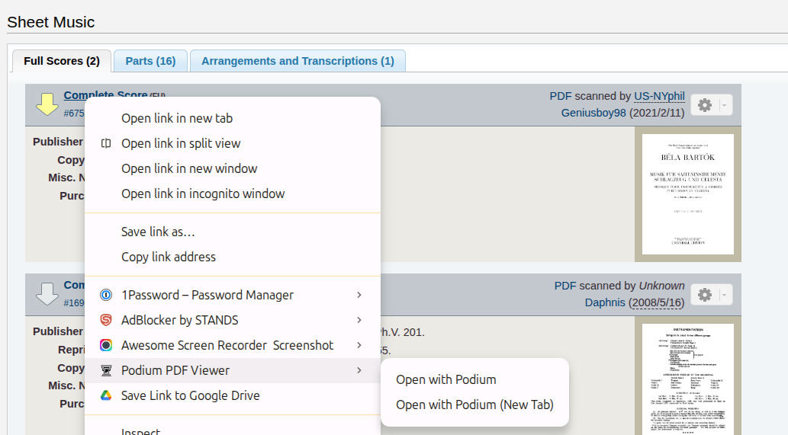
Podium can also be installed as a Progressive Web App. Once installed, Podium appears as a standalone application on your device and works offline.
Desktop (Chrome, Edge, etc.): When visiting the Podium URL, look for the Podium icon and "Open in app" prompt in the address bar. Tap to install.
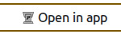
Android (Chrome): Tap the browser menu (three dots) and select Add to Home Screen. A popup will offer two options: choose Install (not "Create shortcut") for the full PWA experience with the correct icon and offline support. Podium will appear in your apps drawer, where you can add it to your home screen in the usual way.
iPhone/iPad: Apple does not display automatic install prompts for PWAs. To install, open Podium in your mobile browser (such as Safari or Chrome), tap the Share button ☐↑ in the toolbar (iPhone: bottom center; iPad: beside the address bar), scroll down in the share sheet and tap "Add to Home Screen", then tap "Add". Once installed, the Podium icon appears on your home screen; if you long-press it, the system refers to it as a bookmark — this is normal Apple terminology for home screen web apps. Also note that if the PWA is not used for several weeks, the iPhone/iPad system may offload the app's data. This can cause settings to reset or require an internet connection to re-verify the app on its next launch. To prevent this, simply open Podium occasionally.
Podium works in all modern browsers. The table below summarizes feature availability:
| Feature | Chrome / Edge | Firefox | Safari |
|---|---|---|---|
| Core functionality | Full | Full | Full |
| Local file open/save | Remembers location | Choose location each save | Choose location each save |
| Full-screen swipe gesture | Full | Full | Enter: use Screen button (iPhone/iPad) |
| Browser extension | Full | N/A | N/A |
| PWA install | Full | N/A | iPhone/iPad: Full. macOS Sonoma or later only. |
| Cloud storage | Full | Full | Full |
| Offline use | Works in browser tab; PWA install recommended for reliability | Works in browser tab; PWA install recommended for reliability | Works in browser tab; PWA install recommended. iPhone/iPad: cache may expire after long inactivity. |
For the best experience, Chrome, Edge, or similar browsers are recommended.
Podium works with Bluetooth foot pedal page turners commonly used by performing musicians. Most foot pedals emulate keyboard arrow keys — Podium detects these and uses them to turn pages.
The behavior of the arrow keys (and therefore the pedal) is configured in the Numbers panel (Page Ring → Numbers). You can assign the right/up arrow to advance a page or jump to the next bookmark, and the left/down arrow to go back a page or jump to the previous bookmark. The bookmark mode is especially useful for scores with repeats: navigate to the first page of the repeated section and long-press its page number to place a bookmark there, then use the back pedal to snap directly to it when the repeat begins.
Podium has four interface elements:
Everything in Podium—menu, panels, layouts—is resizable and movable.
Sand texture: Notice the sand-like texture on the menu's center grip, panel headers, and sliders. Drag any textured area to move that element.
Two-finger pinch gestures: Use pinch-zoom to resize any element. The behavior depends on where your fingers are:
Two-finger drag gestures: Drag, using two fingers, to move the object under the first finger that touches the screen (or all objects, if both touches are on the background).
Mouse alternative: Hold Ctrl and drag to move. Hold Ctrl and scroll the mouse wheel to resize. For greater accuracy, hold Ctrl+Shift while scrolling.
On launch, Podium displays a circular menu on a gray background. The menu has three parts:
Tap any cell to activate it. This determines which cells appear in the outer ring. Only one inner ring cell can be active at a time. Active cells have a white background.
Tap any cell to activate it and trigger its action. Only one outer ring cell can be active at a time.
Unavailable cells are grayed out. On launch, only the Score and More cells (inner ring) and Open and New cells (outer ring) are available.
Cells in the Ink Ring and Page Ring automatically deactivate after 4 seconds of inactivity, returning control to normal page navigation. This is an important feature: when an Ink or Page cell is active, touch gestures on score pages are intercepted by that cell's action rather than being interpreted as page navigation. Auto-deactivation ensures you won't accidentally draw on a page or delete it when you intended to simply turn the page.
To prevent a cell from auto-deactivating, long-press it. A locked cell displays a circle around its outer edge and remains active indefinitely. Long-press the cell again, or select a different cell, to unlock it. Cell locking is supported by all Ink Ring cells and most Page Ring cells (except Numbers).
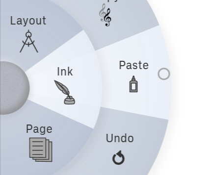
Drag either ring in a circular motion to rotate it. This is helpful when the menu is positioned near a screen edge and some cells aren't visible. Rotating the ring brings hidden cells into view without having to move the menu.
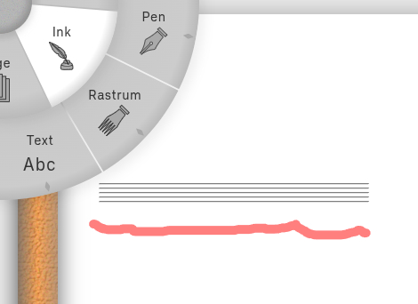
Menu cells with small diamond-shaped pointers contain hidden panels. To open a panel, drag inward or outward. As long as the drag motion isn't circular, the panel will be revealed—circular motion rotates the ring instead.
Moving panels: Drag from the textured header, or use two-fingers (Ctrl-mouse-drag) to drag anywhere on the panel.
Resizing panels: Use two-finger pinch-zoom, with at least one finger on the panel (Ctrl-mouse-wheel, or Ctrl-Shift-mouse wheel for greater precision). Only the selected panel will resize.
Closing vs. hiding:
Double-tap to activate: Double-tapping any panel's textured header activates its corresponding menu cell—exactly as if you had tapped the cell in the ring. If the second tap is a long press (held for about half a second), the cell is also locked. This is a convenient shortcut for activating or de-activating a tool from its open panel, without reaching for the menu.
Many panels use sliders to adjust values. For more precision, drag the slider to approximately the right value, then (without lifting your finger) drag up or down. The farther you drag up or down from the slider, the more precise left ⇄ right motion of the slider becomes.
A floating window displays the current value, positioned so your hand won't block it.

Podium can run in multiple browser tabs simultaneously, sharing a common shared buffer between them. Tabs of the web app (studiop5.org) share one buffer, and tabs of the browser extension share another; transferring across these boundaries is not possible. To distinguish tabs, each is assigned a short musical identifier drawn from dynamics and solfege: do, re, mi, fa, so, la, ti, ff, mf, mp, pp, sf. When a score is loaded, the browser tab displays the score's file name; otherwise it shows Podium followed by the tab's identifier in parentheses, for example Podium (do). Extension tabs use square brackets instead, like Podium [do], so you can tell at a glance whether a tab is running the web app or the browser extension. In theory, up to 12 Podium tabs can be open at the same time. Keep in mind that each tab consumes additional browser memory and processing resources, so opening more than two or three can be impractical.
↑ Back to Table of ContentsManage scores stored as PDF files.
Most of the Score Ring's cells are grayed out until a score is Opened, or until a New, empty score is created.

Open and save PDF score files.
Both Open and Save Panels work with locally attached storage or with cloud storage services: Google Drive, Dropbox, or Microsoft OneDrive. These services require accounts and are subject to their respective terms of service.
In either Panel, tap any tab on the tab strip to select a storage service. Drag the strip left ⇄ right to access other tabs.
Each Panel displays a scrolling list of PDF file and folder entries. Drag or fling that list up/down to scroll the contents. The list is alphabetical A-Z, with directories grouped after files.
Tap a folder entry to repopulate the list with that folder's contents. Below the tab strip is the Folder Path strip: it shows the current folder path. Tap a folder name or icon to load the corresponding folder. Tap the current (last) folder name to refresh the listing from the cloud provider. Tap New to create a new folder.
Each entry in the file/folder list has icons for renaming or deleting. There is no built-in copy/paste functionality: instead, open the file, save it to the desired location, then delete the original.
Tap a PDF score file in the Open Panel to download and display that score.

The Menu's Open cell is also tappable. With a score already open, tapping the Open cell reloads the current file (i.e. "revert to saved").
Recent Tab: The Recent tab provides quick access to the 20 last visited PDF score files. This list is stored in the browser's local storage, so it will have unique contents for each device/browser combination.
The Local tab hands off control to the operating system's built-in file picker. This file picker provides access not only to files stored on the device, but also to cloud storage services registered with the operating system:
Drag and Drop (Desktop): On desktop browsers, you can drag a PDF file directly from your file manager onto the Local tab to open it in Podium.
The Save Panel has a widget for editing the file name. Inside the widget there is an Upload button: tap it to save the current score, with the given name, to the selected folder.

The Menu's Save cell is also tappable. With a score open, tapping the Save cell saves the current file to its original location, bypassing the Save Panel.
Firefox does not support the File System Access API, so local saving works differently:
For the best experience with Podium on Firefox desktop, configure these settings (found in Firefox Settings → General):
On platforms that don't allow specifying the file name during save, edit the score name first in the Details Panel (Score Ring → Details). The .pdf extension is not required—it's added automatically on save if not present.
Podium automatically detects PDF files that use advanced features (such as JBIG2 or JPEG 2000 compression) that are not natively supported by web browsers. It also detects files with security restrictions that prevent modifications. When such a file is opened, Podium will display a warning dialog.
While you can still view and annotate these restricted files within Podium, the PDF standard may prevent Podium from saving your annotations, metadata, or page changes (like insertions or deletions) back to the file. If you attempt to save a protected document, Podium will offer you the option to save a "clean," original copy of the PDF instead. This fallback save ensures you can still back up the document to your local or cloud storage, even if your Podium modifications cannot be preserved.
Create new, empty scores.
New empty scores are created by activating the New cell. The newly created score is made using the number of pages, size, and background color and opacity specified in the New Panel. Each new score is given a default name (e.g. "Opus 42"). If desired, use the Details Panel to rename it before saving.

The New Panel allows you to configure:
Close the current score.
In normal use, simply opening a new score is sufficient — Podium automatically closes the current one. Close is provided as a convenience for users who want to use Podium's practice tools without a score open.
If the current score has unsaved changes, a confirmation dialog appears before closing.
Print the current score with or without annotations.

In Podium, user-created annotations are called Ink. The Print Panel allows you to configure printing options:
The Details Panel displays comprehensive information about the currently open score.
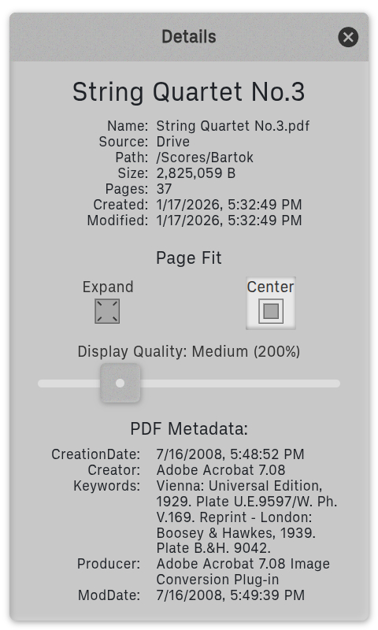
Score Name: At the top of the panel is an editable field showing the score's file name. Edit this field to rename the score before saving. The .pdf extension is not required—it's added automatically on save if not present. This is especially useful on platforms where you cannot specify a file name during save (such as Firefox or Android).
Metadata: The panel displays metadata created by Podium (such as when the score was last modified) as well as any metadata from the original PDF file. This may include information about the score's provenance, such as the original author, creation date, and other document properties.
Page Sizing: In Podium, all pages in a score are displayed at the same size, though this is not necessarily the case for PDF files in general. A single PDF file can contain pages of many different sizes—for example, a score might mix Letter and A4 pages, or include wide foldout pages alongside standard portrait pages. This is common with scanned scores from libraries like IMSLP, where pages may have been scanned at different times or from different editions. By default, Podium sizes pages to match the largest page in the PDF and centers smaller pages within that rectangle. The Details Panel contains a radio button that determines how smaller pages are treated:
Display Quality: The panel allows you to configure display quality. Higher quality uses more memory but provides sharper rendering.
↑ Back to Table of ContentsDetermine how scores are displayed.

Podium implements 4 layout schemes:
By default, scores open with the last used layout on the current browser/platform or, if none, Book. The layout can be changed any time by tapping the desired cell. Whenever a score is saved, its last layout is stored as metadata in the PDF file, as well as in browser local storage.
Remembered view: However you pan and zoom a layout — for instance, dragging and pinching the score to fill the screen on a tablet — Podium remembers that position and size. Each layout keeps its own view, so switching layouts and back restores each one as you left it. Your view is also saved with the score, so reopening the file returns to exactly where you left off.
Book, Horizontal, and Vertical layouts all support four ways to navigate pages:
Bookmarks mark pages for quick navigation. In Book, Horizontal, and Vertical layouts, first navigate to the desired page, then long-press its page number to toggle a bookmark on or off. Bookmarks appear as colored tabs along the edge of the layout; press any tab to jump directly to that page. In Table layout, long-press on a page to make it current and toggle its bookmark state. Bookmarks are saved with the score.
The thickness of each bookmark tab corresponds to one page's position in the pager, so tabs are thinner in longer scores — giving a visual sense of how many pages the score contains.
When dragging a pager cursor over a bookmarked page, the floating readout is painted in that bookmark's color — making it easy to navigate to a specific bookmark even when several adjacent tabs are too small to press directly.
Simulate a physical book.

The Book Panel's Fit buttons determine the score's initial sizing:
After initial layout, use 2 fingers to pinch-pan-zoom the score to move/resize as desired. Mouse users: Ctrl-drag/Ctrl-wheel (Ctrl-Shift-wheel for extra precision).
The Panel's Pace: slider determines how quickly pages turn when tapped or dragged.
Page numbers can be turned on or off in the Book Panel. Current page numbers are shown at the left and right sides of the layout: drag the page number to quickly flip to other pages.
Display the score as a continuous, horizontally-scrollable flow of pages.

The Horizontal Panel's Fit buttons determine the layout's initial size:
After initial layout, use 2 fingers to pinch-pan-zoom the score to move/resize as desired. Mouse users: Ctrl-drag/Ctrl-wheel (Ctrl-Shift-wheel for extra precision).
The Panel's Show: slider determines how many pages are visible at a time (from 1-8)
The Panel's Snap: slider determines how many pages the scroll advances when a page is tapped, dragged, or flung, ensuring that after a scroll, the leftmost and rightmost pages align with the left and right scrollers. Move the Snap: slider all the way to the left to completely disable page snapping. You can also set the slider to snap to 1/2, 1/3, or 1/4 page boundaries.
The Panel's Gap: slider determines how much space to leave around each page, as a percentage of the page's width.
The Panel's Pace: slider determines how quickly pages turn when tapped or dragged.
Page numbers can be turned on or off in the Panel. Current page numbers are shown at the left and right sides of the layout: drag the page number to quickly scroll to other pages.
Display the score as a continuous, vertically-scrollable flow of pages.

Settings for this layout function identically to the Horizontal Layout, see previous section.

Display all pages of the score in a single table.
Convenient for adding or rearranging pages (using the Page Ring), or for quickly locating a page in a large score.

The Table Panel's Fit buttons determine the layout's initial size:
After initial layout, pinch-zoom the score to resize/move as desired.
The Panel's Pages per row: slider determines how many pages are shown in each row.
The Panel's Horizontal Gap slider determines the horizontal gap between neighboring pages, as a percentage of the page's width. Setting this to a negative value causes the pages to be displayed overlapping each other, much like playing cards.
The Panel's Vertical Gap slider determines the vertical gap between neighbouring pages, as a percentage of the page's height. Setting this to a negative value causes the pages to be displayed overlapping each other, much like playing cards.
Page numbers can be turned on or off in the Panel.
Current Page: At any time, there is always a current page, drawn in higher resolution, slightly larger, and on top of all other pages. Tap on any page to make it current. If you change to another layout, that layout will open at the current page.
Reordering pages: Touch-drag a page to a new location. As you drag the page across the layout, other pages will split apart showing you where the page will be inserted if you release the drag. This effect works best when pages are not too extensively overlapped using negative values for the Vertical and Horizontal Gap sliders in the layout panel. Watch the video associated with the preceding figure for a brief demonstration.
Cutting pages: Dragging pages out of the layout cuts them from the score. This can also be accomplished using the Cut cell of the menu's Page Ring.
Add annotations to a score.

The Ink Ring's cells add annotation objects—staves, music symbols, text boxes, external images, and line drawings—to score pages. Tap any cell to activate it, then touch any score page to start drawing, to insert a symbol, image, or text box, or to perform any of the Ring's other actions: cut, copy, paste, grid, or edit.
Pencil, Pen: line drawing tools. They are functionally identical; however, using their associated panels, they can be configured differently (color, line width, etc.) so that two different line types are immediately available for use.
Rastrum: A tool for drawing staves. More generally, a tool that draws a settable number of parallel lines, either horizontally or vertically. Consequently, the tool can also be used for medieval/renaissance staves, lute and guitar tablatures, chord diagrams, and so on.
Text: adds editable, multi-line text boxes to a page.
Symbols: adds individual music symbols. The Symbol cell's panel provides access to the several thousand music glyphs contained in the included Bravura music font.
Cut, Copy, Paste: Each annotation is an independent object that can be cut, copied, pasted, or transformed. To cut or copy an object, tap the Cut or Copy cell, then tap the target object on the score page. Then, if desired, tap the Paste cell, then tap the score page where you want to paste the previously Cut/Copied object.
Undo: Undo the last Ink Ring action. To undo an action, activate the undo cell, then tap the page to revert it to its state before the last action. To conserve memory, only the most recent 10 actions per page can be undone.
Grid: Displays a configurable drawing grid over the page.
Edit: while active, tapping on any existing annotation allows it to be selected, moved, rotated, or resized. Drag out to reveal a panel with buttons to precisely move, resize, or rotate annotation objects.
Draw on score pages.
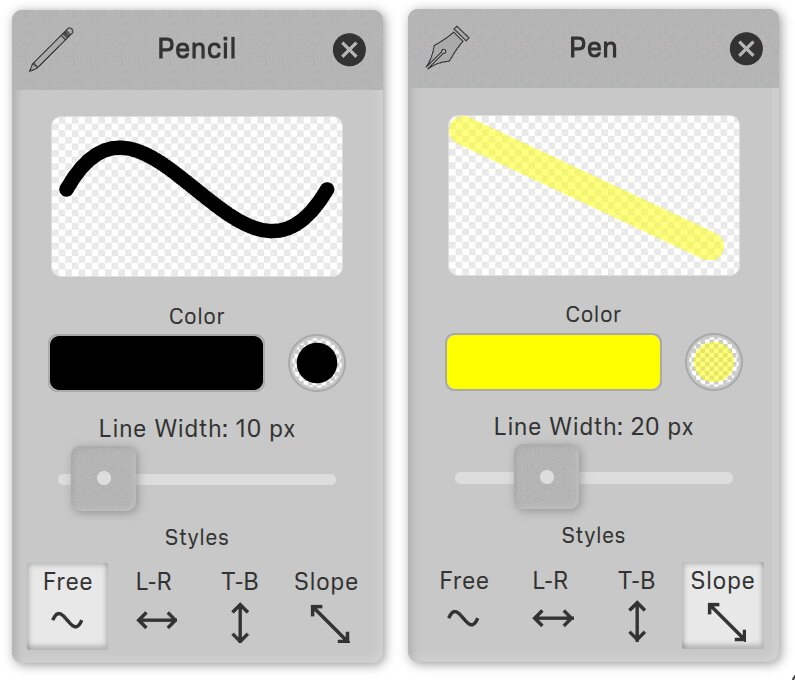
The Pen and Pencil Tools have identical functionality. Configure them independently: that way, two unique line-drawing styles will be readily available.
Tap on the color swatch in the Panel to invoke the Browser's native color chooser.
Tap on the interlocking circles in the Panel to reveal a slider that adjusts opacity.
Buttons on the bottom affect how the lines are drawn:
Draw music staves.
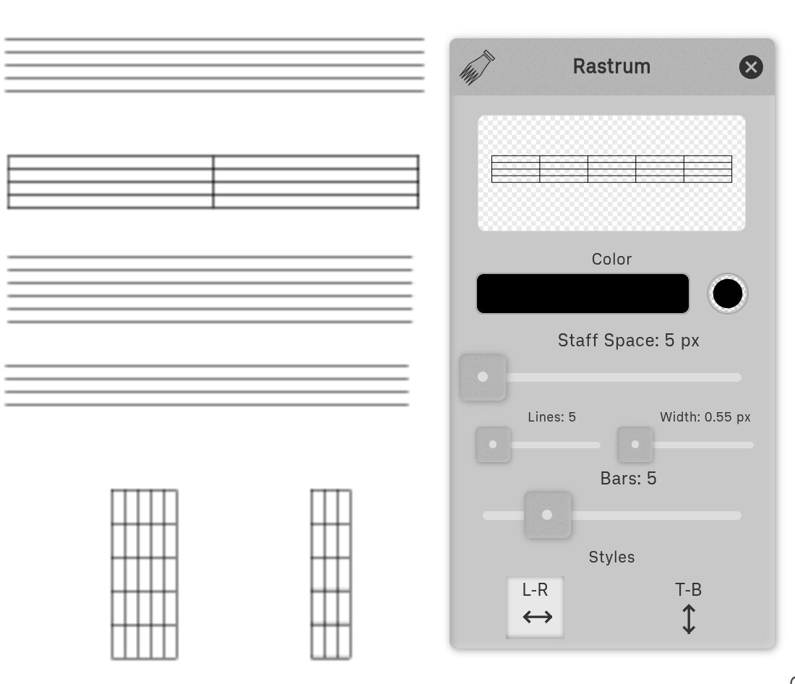
The tool's name comes from the Latin word for "rake": a multi-nibbed writing instrument used to draw the parallel lines of musical staves on manuscript paper. Podium's Rastrum extends this concept, allowing you to draw up to 60 parallel lines with optional bar lines.
The tool is used by first touching the page, then dragging to define the rastrum object's length.
Set the style to L-R or T-B to draw horizontally or vertically. The T-B setting is useful for making chord charts for guitar, ukulele, mandolin, and other fretted instruments. Once drawn, a rastrum object can always be rotated using the Edit tool.
Staff Space: In music typography, a staff space is the standard unit of measurement: the distance from one staff line to the next. All musical elements—noteheads, rests, clefs, accidentals—are sized relative to this unit, so that notation scales consistently regardless of the physical size of the staff. A standard notehead, for example, is designed to fill the space between two adjacent lines. The staff space panel setting determines the distance in pixels between staff lines. Matching this value with the staff space setting in the Symbols tool ensures that staves and symbols are correctly sized for each other.
Width: Sets the thickness of staff lines. Move the slider all the way to the left for Auto, which uses the default recommended thickness for the Bravura font at the current Staff Space value.
Barline Width: Sets the thickness of barlines. Move the slider all the way to the left for Auto, which uses the default recommended thickness for the Bravura font at the current Staff Space value.
Add text boxes to a page.
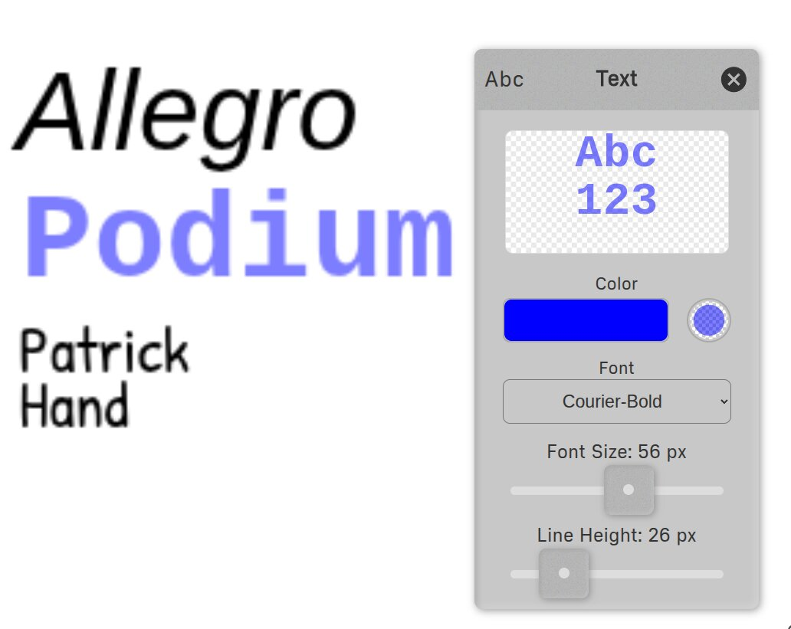
The Text Panel allows you to configure text properties:
Add music symbols to a page.
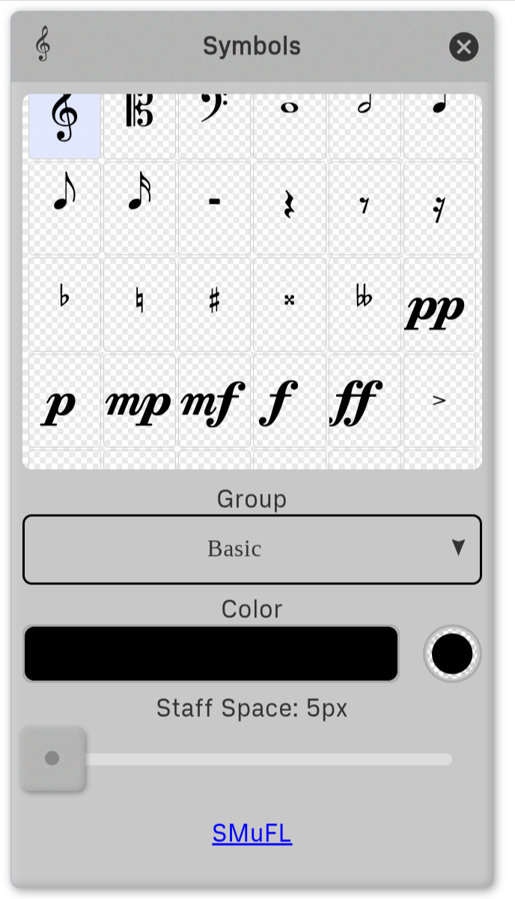
Symbols are drawn from the Bravura font, the SMuFL reference font, giving access to nearly 3,000 music symbols organized into named groups. The SMuFL specification documents all standard groups and their contents.
Choose a group from the dropdown, then tap a symbol in the grid to select it. The grid scrolls vertically and shows many symbols at once.
In addition to the full set of SMuFL groups, three curated groups appear at the top of the list:
Staff Space Sizing: This setting sizes the symbol by specifying the distance between adjacent staff lines the symbol is designed for. Matching this value with the staff space setting in the Rastrum tool ensures that symbols and staves are correctly sized relative to each other.
After placing a symbol, use the Edit tool to precisely position, resize, or rotate it.
Manage annotation objects.
Each annotation is an independent object that can be cut, copied, pasted, or transformed. To cut or copy an object, tap the Cut or Copy cell, then tap the target object on the score page. The object is placed in a paste buffer associated with the score, allowing annotation objects to be moved or copied between pages.
To paste an object from the paste buffer, tap the Paste cell, then tap any score page where you want to paste that object.
The Copy cell has an associated Open Panel that can be used to select an external PNG or JPEG image file from digital storage. Drag out the panel and select the desired image file. Then use the Paste cell to paste the image as an annotation object into a score page.
Deleting annotations: To delete an annotation object, activate the Cut cell and tap the object. If you don't subsequently paste the object elsewhere, it is effectively deleted from the score.
Undo the last Ink Ring action.
To undo an action on a page, activate the Undo cell, then tap on that page to revert it to its state before the last action. Podium stores the most recent 10 actions made on each page.
You can undo any Ink Ring action including paste, delete, and transform operations. The only exception is the Copy action itself, which cannot be undone (though you can undo the subsequent paste).
Draw a 2D guide grid for measuring and layout.
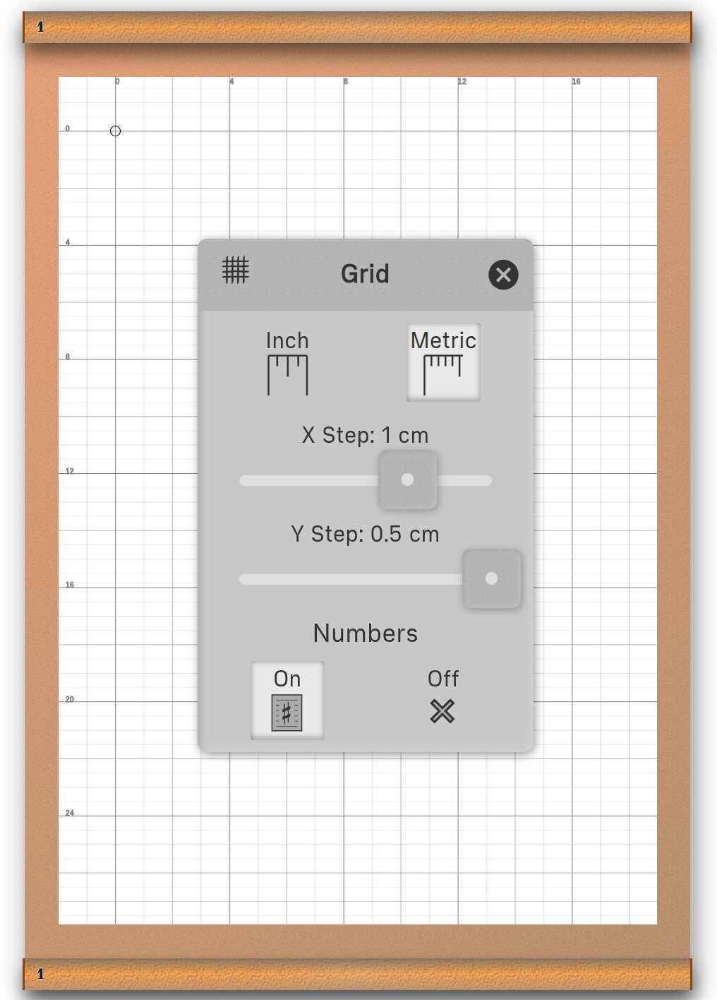
The Grid panel can be configured using Metric or Imperial (inch) units.
The Grid is 2-dimensional: adjust the X and Y Step sliders to change distance between grid lines.
To precisely position the Grid, first activate the Grid cell, then touch any page in the score. Before releasing this touch, the position of the grid will follow your touch. Use this to align the grid with current features of the score page. The grid can be repositioned by first tapping the page to remove the grid, then tap-hold and drag to reposition.
When Numbers is On, labels on the grid lines show the distance from the origin, marked with a "o".
The Grid is not itself an annotation object: it does not interfere with any other Ink actions and is not present when a score is saved or printed.
The Grid helps in aligning and precisely positioning ink elements. It can also be used to measure distance between elements or score features: when activating the grid, set the 0 point to the start of the measurement and then read off the length. Grid measurements represent Podium's best guess at the size of the corresponding printed representation of the score, regardless of zoom level or monitor resolution.
Edit (move, resize, rotate) annotation objects.
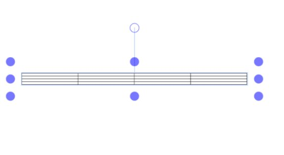
With the Edit cell activated, select an object by touching it, or by sweeping a rectangle around it.
Move the rectangular handles to resize/rotate the object:
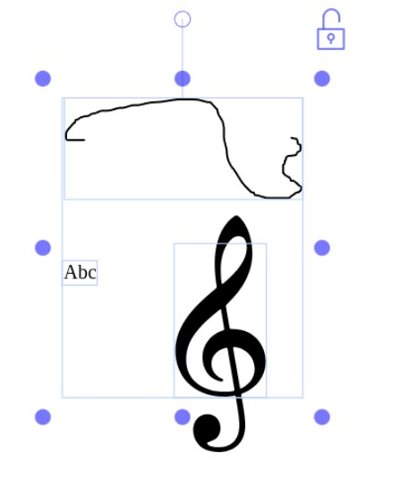
You can drag across multiple objects to select them, then transform them as a group. Tap the lock icon to make the group behave like a single object. Tap it again to ungroup.
Drag out from the Edit cell to open the Edit panel, which provides precise controls for fine-tuning the position, size, and rotation of annotation objects — particularly useful when touch handles are too coarse for accurate adjustment, or when working with a stylus.
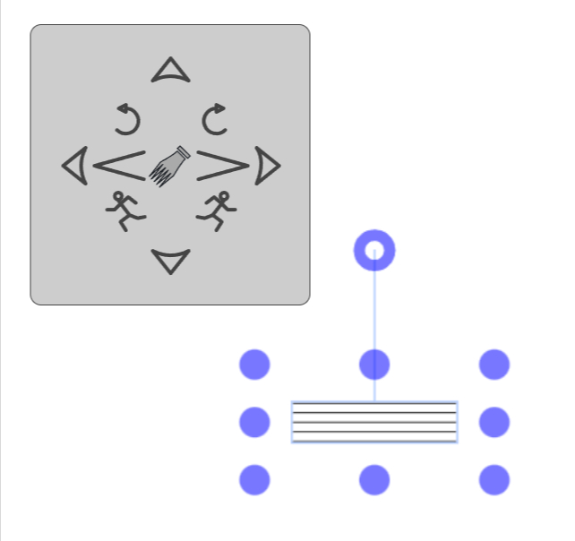
The center of the panel displays the icon of the currently selected target object. To change the target, simply touch or interact with the desired annotation. Alternatively, use the running stick-figure icons to step to the next or previous annotation, on the same page, in stacking order. Stacking order is determined by interaction history: the most recently touched or moved object sits at the front of the stack.
When the Edit Panel is open, clicking on an empty spot on a page—where there is no annotation—will automatically select the most recently selected annotation on that page.
Keyboard shortcut: When an annotation is selected, pressing Delete or Backspace cuts it—equivalent to tapping the scissors button.
Saving and persistence: All annotations are automatically saved with the score when you save the file. Annotations are preserved when switching between different layout modes.
Page limitations: Annotation objects cannot span multiple pages, but they can be easily copied between pages using the Cut/Copy/Paste tools.
Performance considerations: Annotations, especially free drawings with many pen/pencil strokes, can significantly increase the size of a saved score. For complex annotated pages, consider using the Flatten operation (in the Page Ring) to convert annotations into the PDF itself, which can improve performance.
Precision workflow: For precise notation work, combine the Grid tool with Rastrum for staff placement, then use Symbols to add notation. The Edit tool allows fine-tuning of symbol positions after placement.
↑ Back to Table of ContentsManage the pages and page numbers of a score.

Numbers: Drag out to reveal a panel that displays and configures score page numbers.
Add: Insert a new, empty page into the score, as configured by the Add Panel.
Cut: Remove a page from the score and hold it in a local clipboard for pasting elsewhere in the same score.
Copy: Copy a page to a local clipboard for duplication within the current score.
Paste: Insert the page from the local clipboard at a new location in the current score.
Undo: Undo the last page operation (cut or paste).
Export: Copy a page to the shared buffer, making it available to other Podium tabs.
Import: Insert pages from the shared buffer into the current score.
Merge: Insert an entire PDF score into the current score at a chosen page position.
Flatten: Merge all Ink objects on a page into the page itself, converting annotations into permanent PDF content.
Magnify: Drag out to reveal a magnifier panel that shows a zoomed-in view of the score at the touch point.
Configure page numbering and view the current page number displayed in the layout margins.
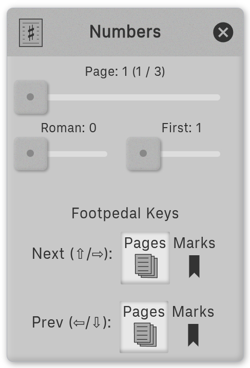
Every page in a score has two numbers: its sequential position (1st, 2nd, 3rd...) and its displayed page number. Podium shows the displayed page number in the layout margins, which you configure using two settings:
Roman pages: How many pages at the beginning of the score should be numbered with lowercase Roman numerals (i, ii, iii...). Typically used for front matter such as title pages, table of contents, and introductory material.
First Page Number: What number to display on the first non-Roman page. This allows you to match page numbers from the original score.
In the screenshot example:
This is useful when working with excerpts from larger scores. Here, you might have extracted a title page, table of contents, and pages 143-145 from a complete work. The numbering scheme preserves the original page references.
These controls are designed for Bluetooth foot pedal page turners commonly used by musicians. Since foot pedals are simply specialized keyboards with only a few keys, these commands work equally well with regular computer keyboards.
You can assign one shortcut to the up or right cursor arrow keys, and one to the left or down cursor arrow keys. Tap the appropriate button to determine if an up or right key press will navigate to the next page, or instead navigate to the next bookmark. Similarly, choose the appropriate button to determine if the left or down keys will navigate to the previous page, or navigate to the previous bookmark.
In addition to the configurable arrow key behavior above, the following keyboard shortcuts are always available:
Configure the appearance of new pages added to the score.
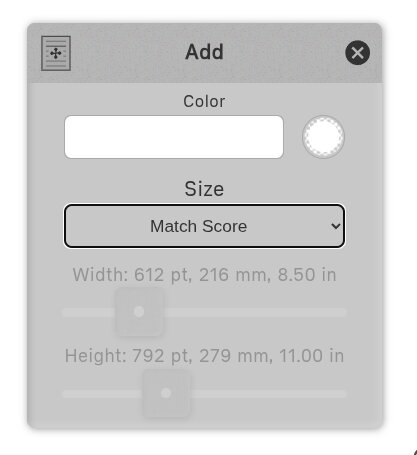
To add a new page to a score, activate the Add cell, then tap on any page in the score. If the tap is on the left side of the page, the new page is added before the tapped page, else it is added after. (For Vertical Layout only: tap above the middle of the score page to add before, or below the middle to add after).
The Add Panel is used to configure the color and type of added pages:
Cut, copy, and paste pages within the current score.
These three cells operate on a local clipboard that exists only within the current tab and session; they do not interact with the shared buffer or other Podium tabs.
Cut: Activate the Cut cell, then tap a page. The page is removed from the score and placed in the local clipboard.
Copy: Activate the Copy cell, then tap a page. The page is placed in the local clipboard. The original page remains in the score.
Paste: Activate the Paste cell, then tap a page in the score. The clipboard page is inserted before or after the tapped page (tap left/top half to insert before, right/bottom half to insert after). The clipboard is preserved after pasting, so you can paste the same page multiple times.
Deleting pages: To delete a page, activate the Cut cell and tap the page. If you don't subsequently paste it elsewhere, it is effectively deleted from the score. In Table Layout, you can also cut pages by dragging them out of the table.
Undo the last page operation.
To undo a page operation (cut or paste), activate the Undo cell. The most recent operation will be immediately reversed. The Page Ring maintains an undo history of the last 10 operations.
Share pages between Podium tabs via the shared buffer.
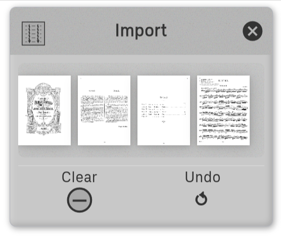
The shared buffer has superpowers! Behind the scenes, it's actually a separate PDF file consisting of all the pages you've exported, in the order you exported them.
Export: Activate the Export cell, then tap a page. The page is appended to the shared buffer. The original page remains in the score.
Import: Activate the Import cell, then tap a page in the score. All pages in the shared buffer are inserted at that position, before the page if you tap on the left half (top half for Vertical Layout) or after if you tap the right half (bottom half for Vertical Layout).
The Import Panel shows you a horizontally draggable view of thumbnails of the shared buffer, along with two management buttons:
Create your own custom practice scores by extracting pages from all the scores you're currently practicing into one combined score. This reduces the chore of opening and closing multiple files during practice sessions.
Merge an entire PDF score into the current score at a chosen page position.
Tap the Merge cell to open the file panel, then select any PDF. The cell activates and a toast message confirms the file is loaded and ready. Tap any page in the current score to insert the chosen PDF before that page. The merge preserves page order from the source file and carries over any Ink annotations saved within it.
After each merge the cell stays active, so you can tap additional pages to insert the same source PDF at multiple positions without reloading it. The cell deactivates automatically after a few seconds, or immediately when you tap it again.
Long-press the Merge cell to lock it. A locked cell remains active indefinitely — useful when you need to merge the same file into many pages without the cell timing out. Long-press again, or tap the cell, to unlock and release the loaded file.
Combining movements: Open the first movement of a work, then use Merge to append subsequent movements one after another, building a complete multi-movement score in a single file.
Inserting pages from another score: Tap the page after which you want the new content to appear, and the source PDF is inserted before that page — giving you precise control over placement.
Adding a title page or appendix: Load a cover page or supplementary material as the source PDF, then tap the first or last page of your score to insert it at either end.
Flatten a score page's Ink annotations into the PDF.
In Podium, each page comprises two overlapping layers:
Activate the Flatten cell, then tap a page to flatten its annotation layer into the background layer. The operation converts all of the page's Ink annotation objects into PDF objects, then incorporates these objects into the background PDF layer [courtesy of the open-source pdf-lib library]. After that, these objects can no longer be selected or edited: they have become an integral part of the score's background PDF.
Adding smartphone photos to a score: If you've photographed score pages with your smartphone, you can incorporate them as permanent PDF pages. See the Ink Ring: Cut, Copy, Paste section for the full workflow — Flatten is the final step that bakes the image into the PDF.
Preventing accidental edits: Suppose you've used the Ink Ring's Rastrum tool to draw a staff on a page, and you want to use the Pencil and Pen tools to draw on that staff. The drawing will be much easier to edit if you first Flatten the staff into the background layer. That way, you'll be able to perform edits without accidentally selecting and editing the staff itself.
Creating manuscript paper: You can create custom manuscript paper by using Ink annotations to design the page layout, then flattening them to make them permanent. Use the Rastrum tool to draw staves, add Symbols for clefs if desired, and use the Grid for proper alignment. Once everything is positioned correctly, flatten all these annotations so they become an integral part of the page. You can then copy this page to create multiple pages of custom manuscript paper, or use it as a template for your compositions.
Magnify a portion of a page.
Drag out from the Magnify cell to reveal a panel that displays a zoomed-in view of the page at the current touch point. Touch any page in the score and the magnifier panel updates in real time, showing both the PDF content and any annotations at the touched location.
The Panel's Zoom: slider adjusts the magnification level from 0.25x to 5x.
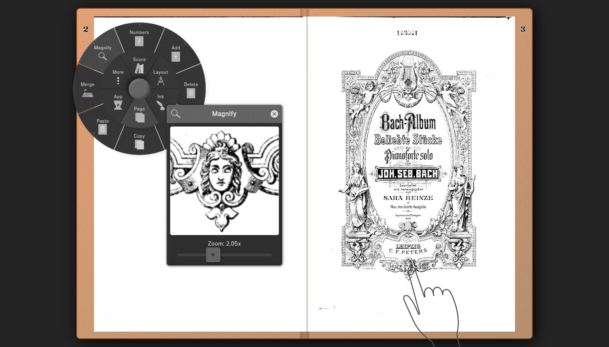
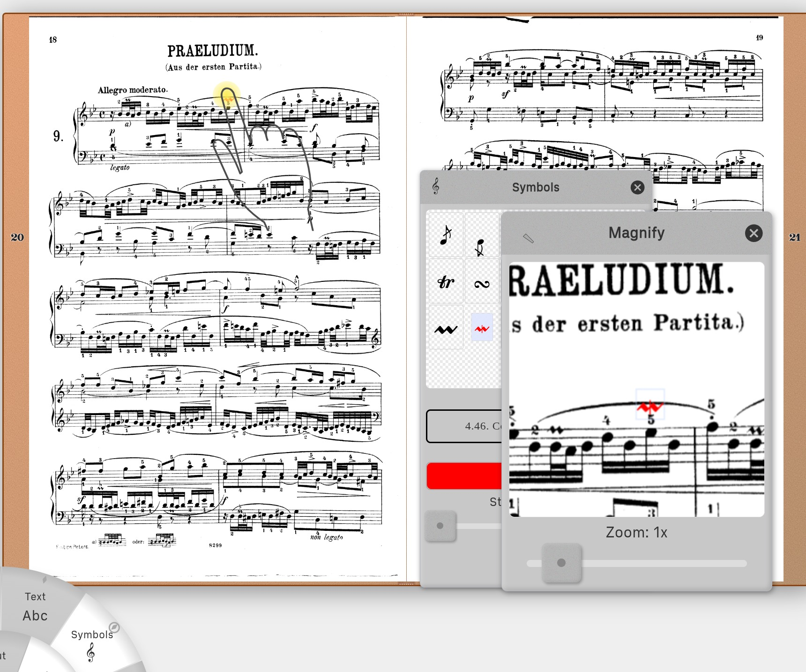
Application information and display settings.
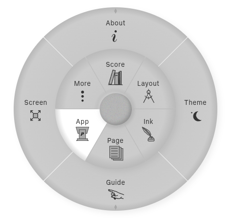
About: Application version, release notes, credits, and license information.
Theme: Cycle among Light, Glass, and Dark display themes.
Guide: Opens this guidebook.
Storage: Manage Podium's browser storage.
Curtain: Darken the screen — useful in low-light performance settings.
Wakelock: Prevent the screen from automatically dimming during a performance.
Screen: Toggle full screen mode.
A tabbed panel providing application information.
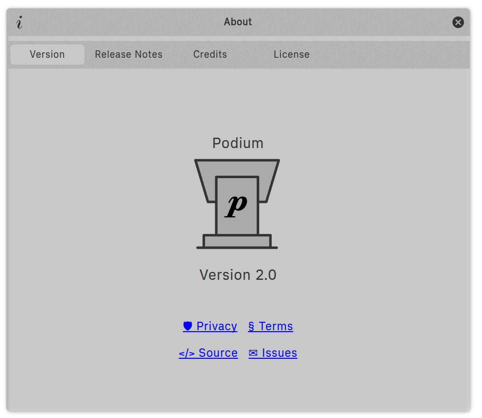
Shows the application's version number and provides links to:
Lists the open source projects Podium is built on.
Official copyright and license statement (GNU Affero General Public License v3).
Cycles among three display themes. The current theme is stored and persists across sessions.
Opens this guidebook in the app. The guidebook is fetched from the web, so an internet connection is required. In the browser extension, the guidebook opens in a new tab. To save it for offline reading, open it in a new window and use your browser's Save Page feature (typically Ctrl+S or Cmd+S) to download it with all images and videos.
Manage Podium's browser storage.
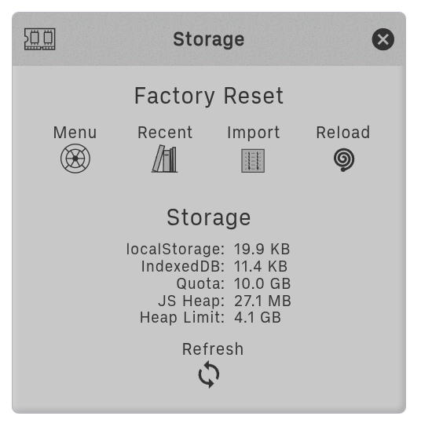
The Storage Panel provides buttons to manage data that Podium stores in the browser:
Where available, the panel also displays a refreshable set of storage statistics useful for developers.
Draws a translucent curtain over the score. Tap the Curtain cell to toggle the curtain on and off. Drag out to reveal the Curtain panel, which lets you choose the curtain color and adjust its opacity.
Two colors are available, each suited to a different performance situation:
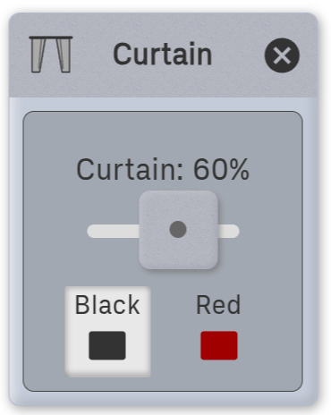
Prevents the screen from automatically dimming or locking during a performance. When Wakelock is active, the device's screen stays on as long as Podium is in the foreground. Tap the Wakelock cell to toggle it on and off.
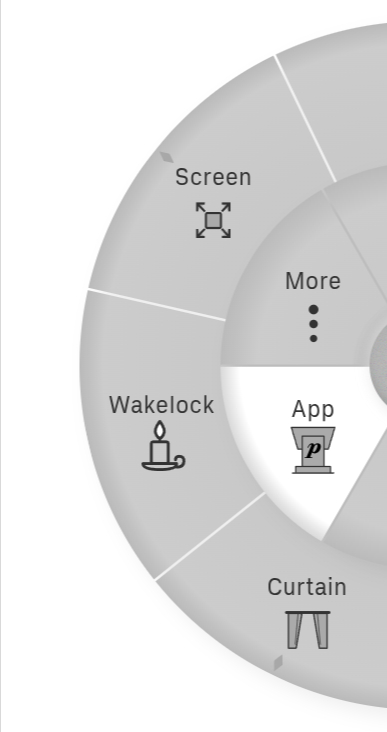
Toggles full screen mode. Alternatively, toggle full screen by swiping down on the background. On iPhone/iPad, the swipe gesture can only exit full-screen; use this button to enter.
Drag out from the Screen cell to open the Screen panel, which provides precise controls for moving and resizing Podium objects — the menu, score, or any open panel. It is particularly useful when a pinch-zoom gesture is too coarse for accurate positioning, or when working with a stylus.
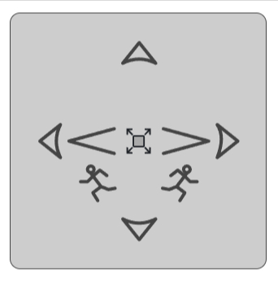
The center of the panel displays the icon of the currently selected target object — the object that the panel's controls will act on. If the center is empty, the background is targeted, and all objects on the background will be affected together.
To change the target, simply touch or interact with the desired object. Alternatively, use the running stick-figure icons on the panel to step to the next or previous Podium object in stacking order. Stacking order is determined by interaction history: the most recently touched or moved object sits at the front of the stack.
↑ Back to Table of ContentsMusician's toolkit.

Metronome: Animated metronome with simulated conductor patterns.
Stopwatch: Practice timer with split times for tracking practice sessions.
Clock: Wall clock displaying current time and date.
Piano: Playable piano keyboard with tuning features and pitch detection.
Review: Audio/video recording with waveform/spectrogram display and instant replay.
Volume: Master volume control slider for all audio playback.
Keyboard: On-screen keyboard for text entry and progressive search in file panels and dropdowns.
Simplify layout by detaching panel contents.
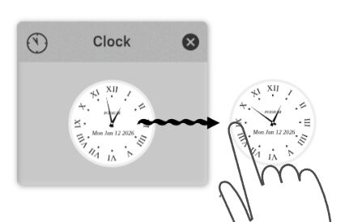
The graphical contents of the Metronome, Stopwatch, Clock, Volume, and Keyboard Panels can be detached from their panels by dragging onto the background.
Reposition detached panels by touch-dragging.
To hide a detached panel, simply fling it.
To close and delete a detached panel, drag out the panel from the menu again, then tap the panel's X button.
Animated metronome with simulated conductor.
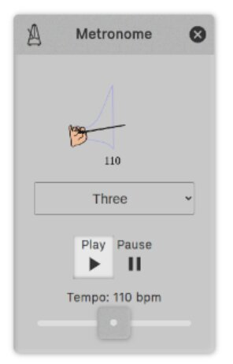
Use the dropdown list to change the graphic from traditional metronome to conducting pattern, with six different beat patterns.
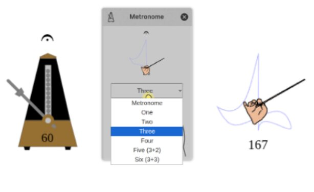
Use the buttons to play/pause the metronome and the slider to set beats per minute. A Mute button silences the metronome's click without affecting Piano or Review playback. (You could always achieve this by setting the volume to zero in the Volume panel, but that would silence all audio — the Mute button silences only the metronome.)
The Latency slider adjusts the timing relationship between the audible tick and the ictus — the moment the pendulum or conductor's hand reaches its beat point. Use it if the click and the visual beat feel out of sync. This is especially useful when listening through Bluetooth headphones, which introduce inherent audio delay that can make the click appear to lag behind the animation.
The Hide/Show toggle controls whether the conducting pattern trace is drawn. When hidden, the conducting hand animates as usual but the pattern lines are not shown — useful if you find the trace distracting while still wanting the visual beat cue.
When the metronome is detached, the tempo is displayed on the pattern itself. In the diagram above, the left pattern shows 60 bpm and displays a fermata symbol indicating it is paused, while the right pattern shows 167 bpm and is actively playing.
While detached, long-press to play/pause. You can change the tempo by tapping on the pattern at the desired frequency.
Timer for your practice sessions.
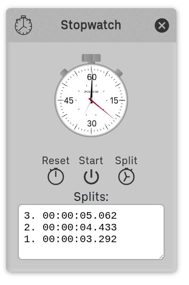
The stopwatch displays split times with the latest split first. If the list scrolls off the panel, drag the lower-right corner to resize the panel.
The stopwatch is fully functional when detached: touch the middle button to start/stop, the left button to reset, and the right button to record a split. To see the split times, you'll need to view the whole panel—simply drag out from the menu cell again.
Wall clock displaying the current time and date, using the platform's default time zone. Useful for keeping track of time during practice sessions without leaving Podium.
The clock can be detached and positioned anywhere on screen.
Playable piano keyboard with tuning and pitch detection features.
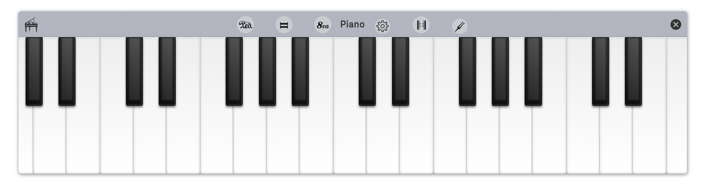
Drag left ⇄ right from the [] button to narrow/widen the keyboard.
Drag left ⇄ right from the 8va button to move the visible keys within the keyboard.
Multiple notes can be played simultaneously using multiple fingers, including chords and intervals, up to the polyphony limit set in Settings: Timbre (see below). Podium supports as many simultaneous notes as you can play; in practice, real-world touch screens typically recognize no more than 5 simultaneous touches.
Sustain Mode: Identified by the standard piano pedal symbol. In sustain mode, notes continue to sound even after the key is released. Note however that piano notes only last for a maximum of a little over 2 seconds. Podium is not a sophisticated audio workstation.
Autorepeat Mode: Tap the Autorepeat Mode button to toggle autorepeat mode. When enabled, key presses automatically repeat at intervals (2.5 seconds for piano samples, 5 seconds for tuning fork timbre; see Settings: Timbre below), allowing you to hear sustained notes for easier tuning.
Pitch Detector: Identified by a tuning fork icon. Tap the Pitch Detector button to toggle pitch detection on/off. When on, a YIN-based pitch detector attempts to estimate the closest piano note to what it hears in the microphone. It overlays a whole note (semibreve) on the corresponding key, plus shows the number of cents deviation from that key's expected pitch. The opacity of the whole note reflects the algorithm's confidence; the symbol becomes more transparent as confidence decreases. The expected pitch is affected by the Settings Pitch setting (see below), but not by the Temperament setting, i.e., it's the deviation from equal tempered tuning regardless of Temperament setting.
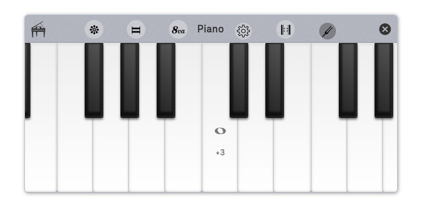
Settings: Tap the Settings button to open/close the Settings Panel. Once open, you can close it by flinging. This internal panel is always enclosed by the keyboard: drag horizontally to reposition. It has 3 tabs:
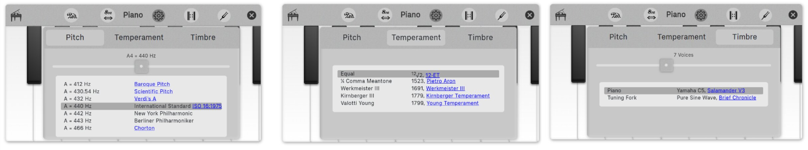
Record audio/video with instant replay.
Monitor a device's camera and microphone, with instant replay of the last ~30 seconds (configurable).
The Review panel has three tabs:
Displays live video from your camera with playback controls.
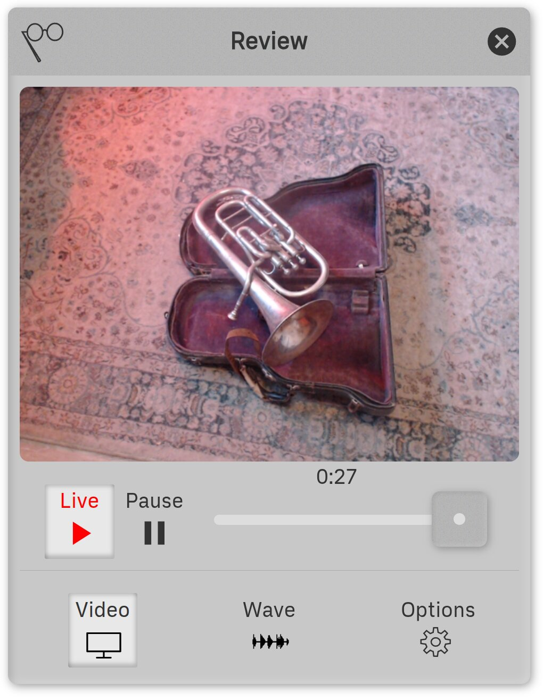
The Review tool records you continuously while practicing/rehearsing. If you make a mistake (or do something great!) you can immediately replay the moment for analysis.
You can let the Review run for hours without worrying about running out of memory. Behind the scenes, Podium automatically manages memory by keeping only the most recent portion of your session available for replay (typically 30 seconds to a few minutes). This ensures that you can always review your most recent performance without exhausting your device's resources.
At any time, the tool will be in one of two modes:
Live Mode: Audio and video are continuously recorded, and the Play button displays "Live". As described above, when the recording reaches the preset maximum, older content is automatically discarded while recording continues.
Pause recording by tapping the Pause button, and resume by tapping the Play button (labeled Live).
The scrubber will always be at the far right, with its label indicating the recording duration in seconds. This duration will skip backwards by half whenever the first half of the recording is discarded.
To enter Playback mode, drag the scrubber to the left. Playback begins at the chosen location.
Playback Mode: Recorded audio and video are played back, and the Play button's text label is "Replay".
Pause playback by tapping the Pause button, and resume by tapping the Play Button (labeled Replay).
To reenter Live mode, drag the scrubber to the right, or simply wait until Playback ends. Then tap the Play Button to restart recording. Any previous recording will be lost.
Displays the waveform of the mike input overlaid on a waterfall spectrum: useful for sound visualization.
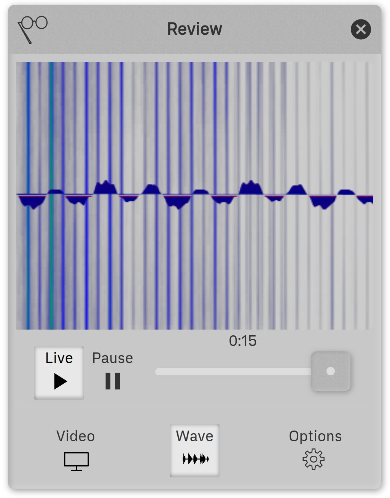
Configure the Review tool settings:
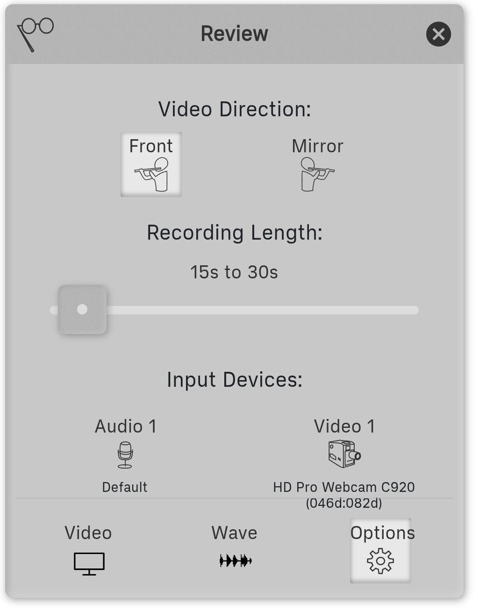
On-screen keyboard for text entry and progressive search.
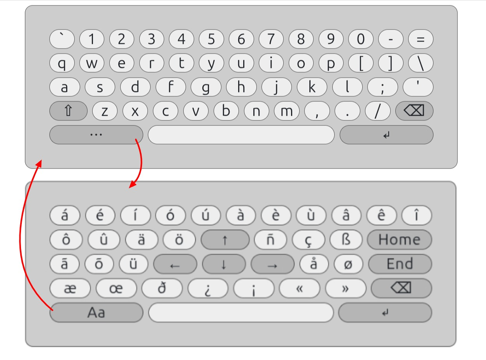
The Keyboard panel provides an on-screen typewriter-style keyboard for devices without a physical keyboard, or for situations where the operating system's software keyboard is inconvenient to summon. It serves two main purposes:
The key labeled "…" switches the keyboard to its special keys layout, which includes international characters, cursor arrow keys, and the Home and End keys. The key labeled "Aa" switches back to the normal letter keys. The arrow keys are also useful for testing your Bluetooth foot pedal configuration without needing the physical pedal nearby.
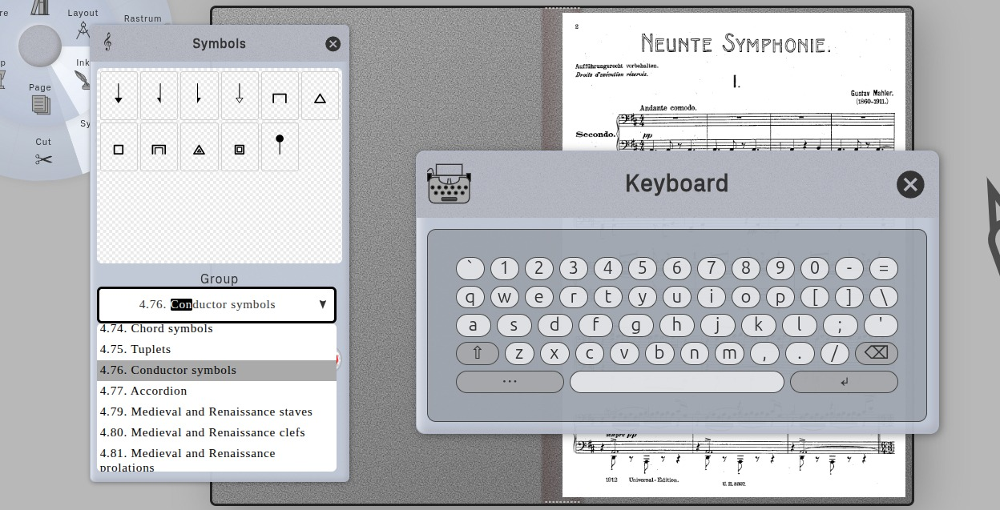
Master volume control for all Podium audio output (metronome, piano, review playback).
This volume control attenuates the platform's own volume setting. For best results, set the platform volume to a high value, then use Podium's volume slider to decrease to the desired level. This is especially convenient when the platform's volume controls are hard to reach, such as during a practice session in full-screen mode.
↑ Back to Table of ContentsI'm a Canadian software engineer living in Colorado. Originally a classical guitar wannabe, I studied music theory / computer music at McGill U (EMS) and Stanford U (CCRMA). After ~30 years in the software industry, I now devote way too much of my free time to various music projects.
-glen diener
glen@studiop5.org